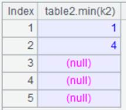
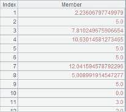
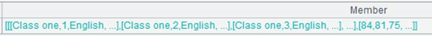

Description:
Perform conditional summary on table data collected by the data synchronization tool.
Syntax:
cdc_collect(cdcPath; tables, startTime[,endTime])
Note:
CdcCli External library function (See External Library Guide).
The function returns a multilevel table sequence made up of Name, Delete and Insert fields. Name field is ¡°Database name.data table name¡±; Delete field is data deleted from the table; and Insert field is data inserted to the table. The modification operation is treated as ¡°first delete and then insert¡± – the deleted data is recorded in Delete field and the modified data is recorded in Insert field.
For operations on the same primary key, Delete field only stores one operation and Insert field returns the newly added operation or the final modification operation.
Parameter:
|
cdcPath |
The path of dirout folder, which stores the multizone composite table generated from data collection by the data synchronization tool. |
|
tables |
Name(s) of the table(s) to be summarized, which is/are case-insensitive and can be a string(strings); use white space to separate multiple table names or write these tables as a sequence. By default, all tables will be summarized. |
|
startTime/endTime |
The starting and ending time of data collection. The format is yyyy-MM-dd HH:mm:dd or yyyy-MM-dd. startTime cannot be omitted. When endTime is absent, use the current time. When both parameters are present, the value is a left-closed, right-open interval. |
Return value:
Table sequence
Example:
|
|
A |
|
|
1 |
=cdc_collect("D:/tmp/dirout";"mytest.test1","2023-06-01 08:00:00") |
Collect data of table test1 falling between the specified starting time and the current time. |
|
2 |
=cdc_collect("D:/tmp/dirout";,"2023-06-01 08:30:00") |
Collect data of all tables falling between the specified starting time and the current time.
|
|
3 |
=cdc_collect("D:/tmp/dirout";["mytest.test2","mytest.test3"],"2023-06-01 08:00:00","2023-06-01 18:00:00") |
Perform summary on data of multiple tables within the specified period of time. |
|
4 |
=cdc_collect("D:/tmp/dirout";"mytest.test2 mytest.test3","2023-06-01 08:00:00","2023-06-01 18:00:00") |
Same as above. |
|
5 |
=file("F://tmp/emp1.ctx").open() |
Open composite table emp1.ctx. Its content is as follows:
|
|
6 |
=A5.update(:A4.Delete) |
Update the data deletion operation on table test1 to composite table emp1.ctx. Below is the content of A4.Delete:  |
|
7 |
=A5.update(A4.Insert) |
Update the data addition operation on table test1 to composite table emp1.ctx. Below is the content of A4. Insert:  |
|
8 |
=A5.cursor().fetch() |
Check data in composite table emp1.ctx and find data is correctly synced:  |